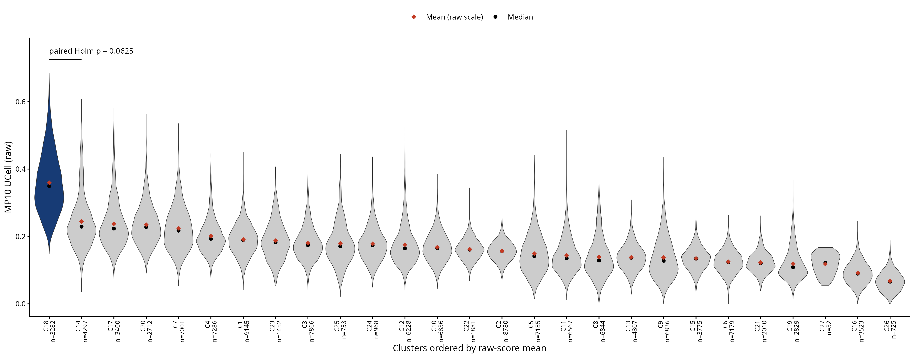
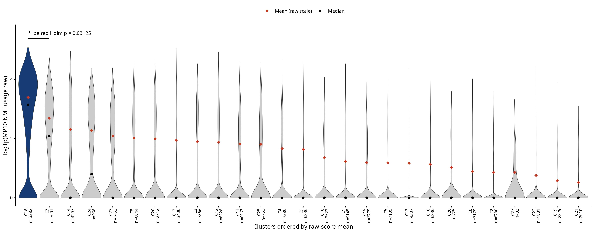
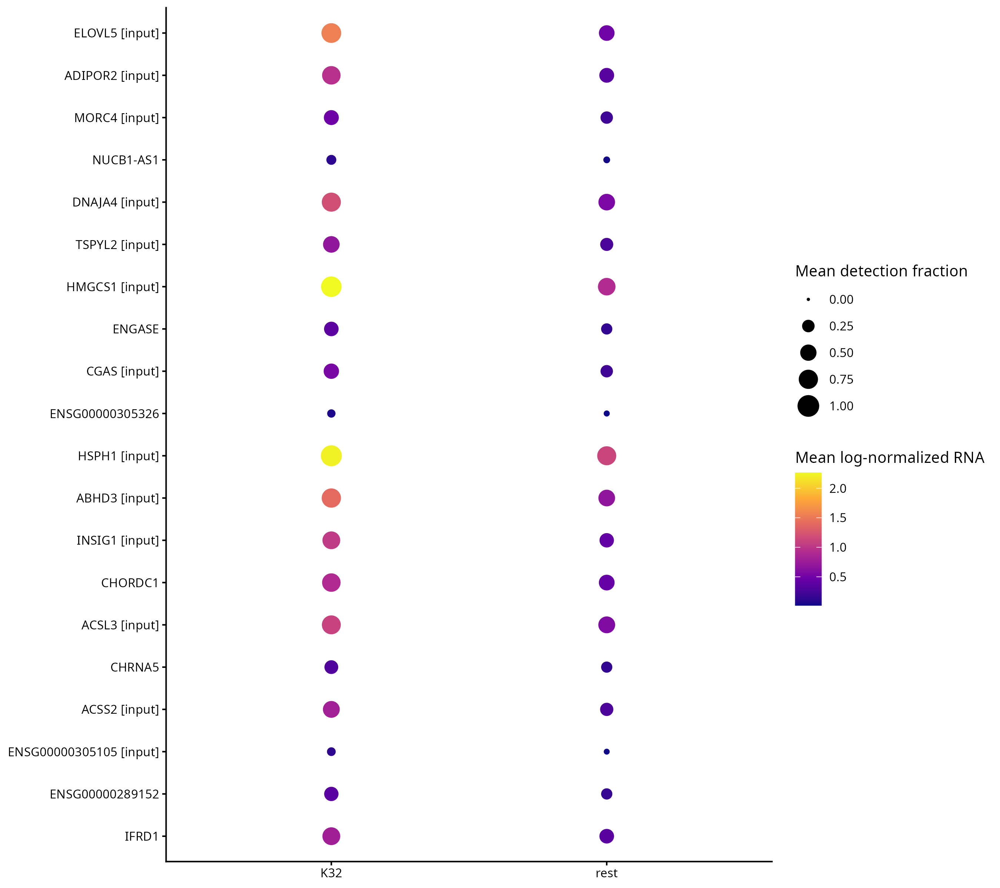
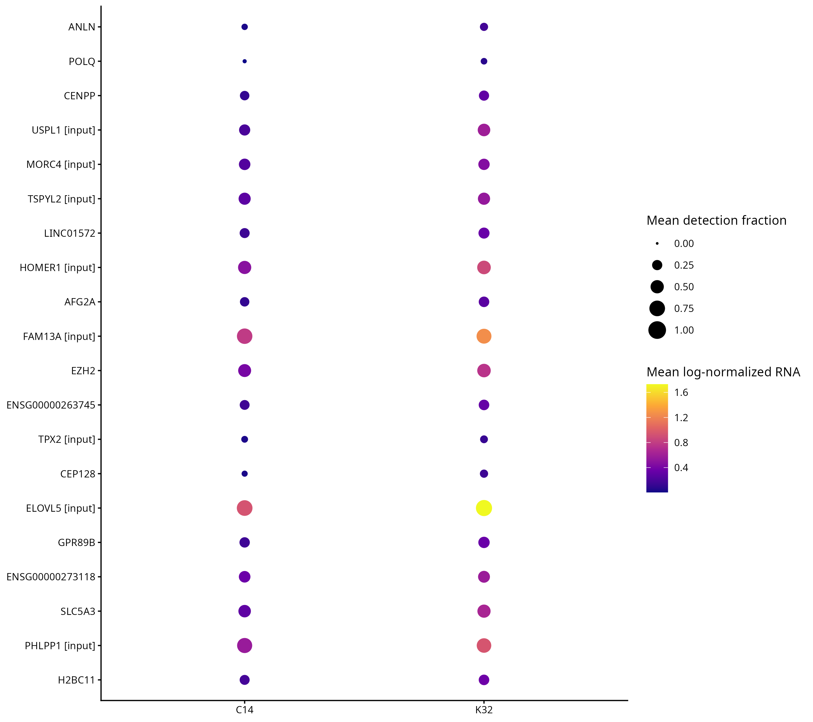
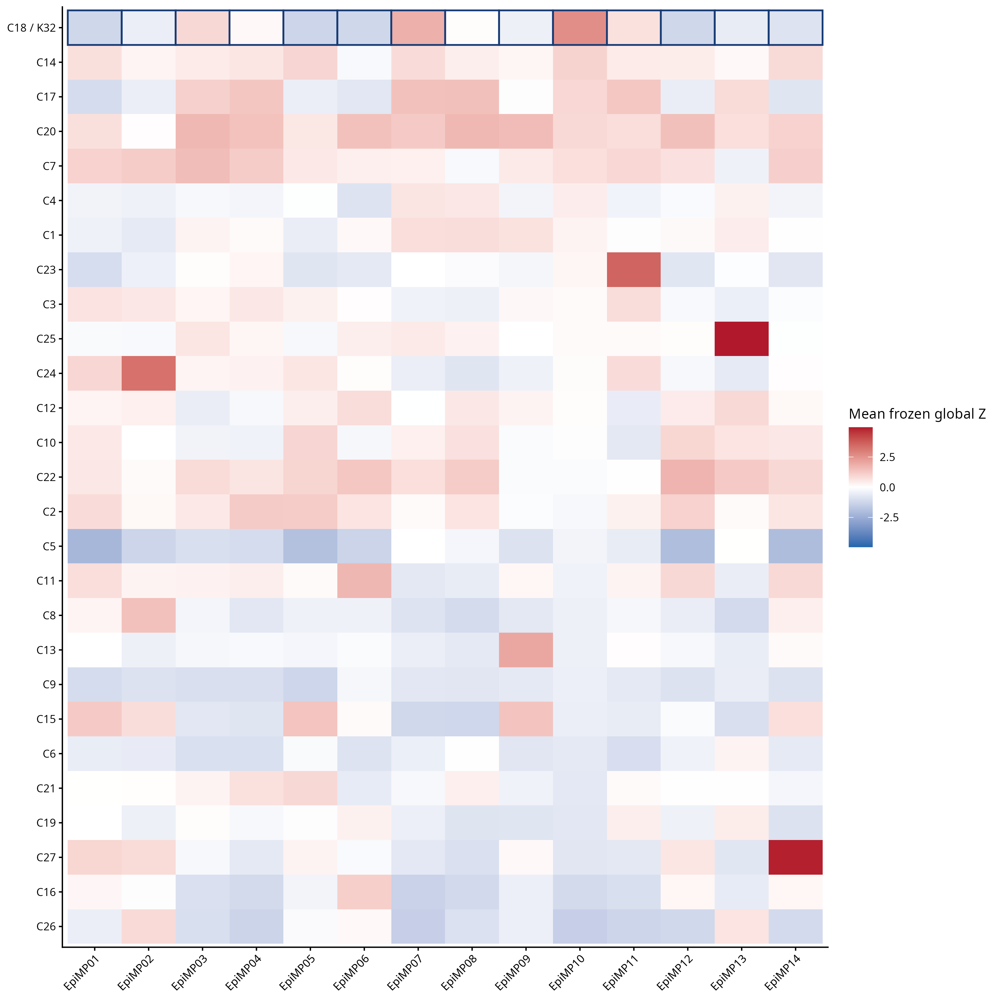
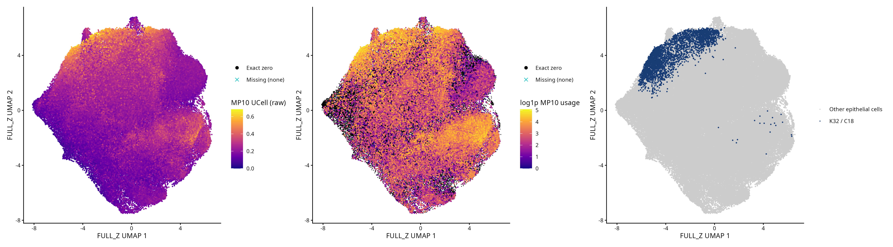
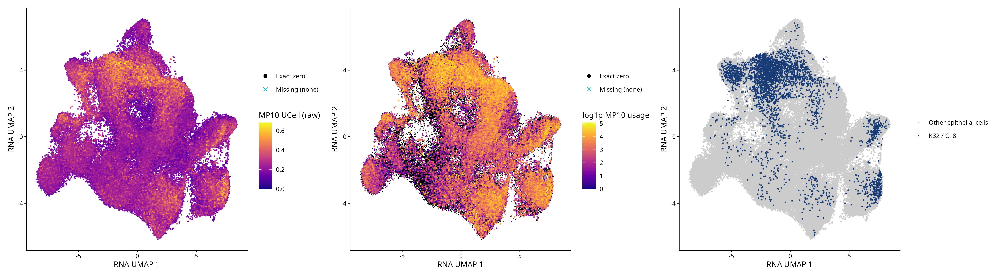

冻结对象：K32=C18，FULL_Z_r1.00；123,699 个原上皮分析细胞、57 个生物样本、5 个 dataset、27 群。K32 3,282 细胞。Normal 22,436 细胞及原纳入 Cycling 均保留。本轮未重新拟合 NMF/UCell/聚类/UMAP。
总体 UCell：K32 0.359668 vs C14 0.244698；原 usage：28.6331 vs C7 13.7194。下表的差值是合格样本内均值差的等权平均，不是总体细胞加权差。所有比较均无 ties/零差，使用双侧精确 Wilcoxon；Holm 在每个分支的两项预定检验内校正。NMF 检验用原尺度，只有展示用 log1p。
| branch | score | control | n_pairs | n_datasets | n_K32_higher | mean_difference | median_difference | p | exact | zero_differences | absolute_ties | method | p_Holm |
|---|---|---|---|---|---|---|---|---|---|---|---|---|---|
| full | UCell | C14 | 5 | 3 | 5 | 0.04858 | 0.04808 | 0.0625 | TRUE | 0 | 0 | Wilcoxon signed rank exact test | 0.0625 |
| full | NMF | C7 | 8 | 3 | 7 | 16.84 | 16.43 | 0.01562 | TRUE | 0 | 0 | Wilcoxon signed rank exact test | 0.03125 |
| exclude_P07T | UCell | C14 | 4 | 3 | 4 | 0.04687 | 0.04512 | 0.125 | TRUE | 0 | 0 | Wilcoxon signed rank exact test | 0.125 |
| exclude_P07T | NMF | C7 | 7 | 3 | 6 | 15.76 | 10.6 | 0.03125 | TRUE | 0 | 0 | Wilcoxon signed rank exact test | 0.0625 |


三项 v3 模型精确复用；新增 full C14、exclude_P07T rest/C14 三项均成功拟合。比较方向均为 K32−对照。模型样本数不是已确认独立患者数。
| branch | control_cluster | origin | seed | n_pairs | n_datasets | n_tested | residual_df | status | eligible_dataset_pairs |
|---|---|---|---|---|---|---|---|---|---|
| full | rest | v3_exact_reuse | 42 | 12 | 4 | 1.458e+04 | 11 | COMPLETE | CNP0000460: 4 eligible pairs; HRA003620: 4 eligible pairs; InhouseData: 2 eligible pairs; PRJNA662018: 2 eligible pairs |
| full | C17 | v3_exact_reuse | 42 | 8 | 4 | 8505 | 7 | COMPLETE | CNP0000460: 4 eligible pairs; HRA003620: 2 eligible pairs; InhouseData: 1 eligible pairs; PRJNA662018: 1 eligible pairs |
| full | C7 | v3_exact_reuse | 42 | 8 | 3 | 9109 | 7 | COMPLETE | CNP0000460: 3 eligible pairs; HRA003620: 3 eligible pairs; PRJNA662018: 2 eligible pairs |
| full | C14 | new_fit | 123 | 5 | 3 | 8820 | 4 | COMPLETE | CNP0000460: 3 eligible pairs; HRA003620: 1 eligible pairs; PRJNA662018: 1 eligible pairs |
| exclude_P07T | rest | new_fit | 123 | 11 | 4 | 1.397e+04 | 10 | COMPLETE | CNP0000460: 3 eligible pairs; HRA003620: 4 eligible pairs; InhouseData: 2 eligible pairs; PRJNA662018: 2 eligible pairs |
| exclude_P07T | C14 | new_fit | 123 | 4 | 3 | 8061 | 3 | COMPLETE | CNP0000460: 2 eligible pairs; HRA003620: 1 eligible pairs; PRJNA662018: 1 eligible pairs |
对 C14，非输入基因 SREBF2、SREBF1、HSD17B7 的 log2FC 分别为 0.673、0.683、0.735，FDR 为 0.0216、0.0271、0.0205；五个样本的普通 log-normalized RNA 均值方向均为正。FASN 的 log2FC=0.374，FDR=0.185；INSIG1 FDR=0.245。SREBF2、SREBF1、HSD17B7 在 K32 的等权检出率反而低于 C14，说明表达效应不等于独占检出，不能把它们写成特异阳性标签。
| branch | gene_requested | log2FC | FDR | pct_left | pct_right | positive_fraction | up_rank | in_any_14MP_top50 |
|---|---|---|---|---|---|---|---|---|
| full | SREBF2 | 0.6728 | 0.02162 | 0.7406 | 0.8356 | 1 | 859 | FALSE |
| full | SREBF1 | 0.6827 | 0.02705 | 0.3893 | 0.4384 | 1 | 1005 | FALSE |
| full | FASN | 0.3742 | 0.1846 | 0.3483 | 0.4816 | 0.8 | 2545 | FALSE |
| full | HSD17B7 | 0.7349 | 0.02054 | 0.2371 | 0.2668 | 1 | 835 | FALSE |
| full | ELOVL5 | 1.453 | 0.0007629 | 0.8086 | 0.7527 | 1 | 15 | TRUE |
| full | ADIPOR2 | 1.072 | 0.001408 | 0.6586 | 0.6026 | 1 | 77 | TRUE |
| full | HMGCS1 | 1.203 | 0.002139 | 0.9245 | 0.887 | 1 | 127 | TRUE |
| full | ABHD3 | 0.7979 | 0.02602 | 0.7627 | 0.8048 | 0.8 | 980 | TRUE |
| full | INSIG1 | 0.3405 | 0.2445 | 0.5778 | 0.7047 | 0.6 | 2834 | TRUE |
| full | ACSL3 | 1.071 | 0.001513 | 0.7081 | 0.7498 | 1 | 87 | TRUE |
| full | ACSS2 | 1.054 | 0.003442 | 0.5083 | 0.4815 | 1 | 211 | TRUE |
| exclude_P07T | SREBF2 | 0.8327 | 0.0139 | 0.7303 | 0.8199 | 1 | 434 | FALSE |
| exclude_P07T | SREBF1 | 0.8636 | 0.0175 | 0.3595 | 0.3869 | 1 | 516 | FALSE |
| exclude_P07T | FASN | 0.4235 | 0.2096 | 0.3163 | 0.424 | 0.75 | 2319 | FALSE |
| exclude_P07T | HSD17B7 | 0.8289 | 0.02096 | 0.2632 | 0.2784 | 1 | 598 | FALSE |
| exclude_P07T | ELOVL5 | 1.279 | 0.001917 | 0.7785 | 0.7418 | 1 | 45 | TRUE |
| exclude_P07T | ADIPOR2 | 1.159 | 0.002294 | 0.6987 | 0.6388 | 1 | 62 | TRUE |
| exclude_P07T | HMGCS1 | 1.202 | 0.006446 | 0.9146 | 0.8968 | 1 | 225 | TRUE |
| exclude_P07T | ABHD3 | 1.119 | 0.0043 | 0.8215 | 0.7984 | 1 | 141 | TRUE |
| exclude_P07T | INSIG1 | 0.3679 | 0.2734 | 0.528 | 0.669 | 0.5 | 2604 | TRUE |
| exclude_P07T | ACSL3 | 0.9127 | 0.006111 | 0.6699 | 0.7296 | 1 | 211 | TRUE |
| exclude_P07T | ACSS2 | 1.344 | 0.001357 | 0.4863 | 0.4578 | 1 | 17 | TRUE |
排序仅限定 log2FC>0，然后按 FDR、PValue、gene_id 升序，不按脂质功能筛选。完整上/下调和 top50 含未注释转录本；输入属性、检测率和方向均保留。rest top20 有 13 个输入基因；C14 top20 有 8 个。C14 前列 ANLN、POLQ、CENPP、TPX2 等提示还应考虑细胞周期/分裂背景。完整富集同时出现染色质组织、RHO/CDC42 与形态发生等信号；带神经名称的共享基因通路不证明神经细胞身份。
| branch | control | top_n | n_input | n_noninput | n_mapped_symbol | n_with_lipid_name_pathway_annotation | n_FDR_lt_05 |
|---|---|---|---|---|---|---|---|
| full | rest | 20 | 13 | 7 | 17 | 7 | 20 |
| full | rest | 50 | 24 | 26 | 42 | 13 | 50 |
| full | C17 | 20 | 15 | 5 | 19 | 12 | 20 |
| full | C17 | 50 | 24 | 26 | 48 | 23 | 50 |
| full | C7 | 20 | 12 | 8 | 19 | 4 | 20 |
| full | C7 | 50 | 20 | 30 | 45 | 12 | 50 |
| full | C14 | 20 | 8 | 12 | 19 | 1 | 20 |
| full | C14 | 50 | 9 | 41 | 44 | 3 | 50 |
| exclude_P07T | rest | 20 | 10 | 10 | 16 | 6 | 20 |
| exclude_P07T | rest | 50 | 22 | 28 | 43 | 19 | 50 |
| exclude_P07T | C14 | 20 | 9 | 11 | 19 | 5 | 20 |
| exclude_P07T | C14 | 50 | 14 | 36 | 46 | 9 | 50 |
“脂质注释”只表示命中冻结 GO/Reactome 中名称含 lipid/sterol/cholesterol/fatty acid/SREBP/SREBF 的集合，是可追溯注释回查，不是全功能分类比例或新富集。


vs rest：胆固醇/甾醇合成、SREBP 调控及脂肪酸合成/代谢均正向显著；β氧化未显著。vs C14：SREBP 胆固醇调控 NES=1.895、FDR=0.00799；胆固醇合成 NES=1.638、FDR=0.0998，甾醇合成 NES=1.558、FDR=0.0992。脂肪酸合成/代谢与 β 氧化的 NES 为负且不显著。因此有部分 SREBP/甾醇相关 RNA 支持，不能推广为所有脂质途径都更高。
| branch | control | pathway | NES | padj |
|---|---|---|---|---|
| full | rest | C2::REACTOME_CHOLESTEROL_BIOSYNTHESIS | 2.773 | 0.001858 |
| full | rest | C2::REACTOME_REGULATION_OF_CHOLESTEROL_BIOSYNTHESIS_BY_SREBP_SREBF | 2.72 | 0.001858 |
| full | rest | C5::GOBP_FATTY_ACID_BETA_OXIDATION | -1.471 | 0.1691 |
| full | rest | C5::GOBP_FATTY_ACID_BIOSYNTHETIC_PROCESS | 2.012 | 0.001858 |
| full | rest | C5::GOBP_FATTY_ACID_METABOLIC_PROCESS | 1.49 | 0.001858 |
| full | rest | C5::GOBP_STEROL_BIOSYNTHETIC_PROCESS | 2.654 | 0.001858 |
| full | C14 | C2::REACTOME_CHOLESTEROL_BIOSYNTHESIS | 1.638 | 0.09978 |
| full | C14 | C2::REACTOME_REGULATION_OF_CHOLESTEROL_BIOSYNTHESIS_BY_SREBP_SREBF | 1.895 | 0.00799 |
| full | C14 | C5::GOBP_FATTY_ACID_BETA_OXIDATION | -1.173 | 0.5193 |
| full | C14 | C5::GOBP_FATTY_ACID_BIOSYNTHETIC_PROCESS | -0.8315 | 0.9229 |
| full | C14 | C5::GOBP_FATTY_ACID_METABOLIC_PROCESS | -1.03 | 0.7151 |
| full | C14 | C5::GOBP_STEROL_BIOSYNTHETIC_PROCESS | 1.558 | 0.09919 |
| exclude_P07T | rest | C2::REACTOME_CHOLESTEROL_BIOSYNTHESIS | 2.679 | 0.001863 |
| exclude_P07T | rest | C2::REACTOME_REGULATION_OF_CHOLESTEROL_BIOSYNTHESIS_BY_SREBP_SREBF | 2.464 | 0.001863 |
| exclude_P07T | rest | C5::GOBP_FATTY_ACID_BETA_OXIDATION | -1.455 | 0.1611 |
| exclude_P07T | rest | C5::GOBP_FATTY_ACID_BIOSYNTHETIC_PROCESS | 1.966 | 0.001863 |
| exclude_P07T | rest | C5::GOBP_FATTY_ACID_METABOLIC_PROCESS | 1.428 | 0.003492 |
| exclude_P07T | rest | C5::GOBP_STEROL_BIOSYNTHETIC_PROCESS | 2.577 | 0.001863 |
| exclude_P07T | C14 | C2::REACTOME_CHOLESTEROL_BIOSYNTHESIS | 1.489 | 0.1667 |
| exclude_P07T | C14 | C2::REACTOME_REGULATION_OF_CHOLESTEROL_BIOSYNTHESIS_BY_SREBP_SREBF | 1.762 | 0.03779 |
| exclude_P07T | C14 | C5::GOBP_FATTY_ACID_BETA_OXIDATION | -1.188 | 0.5242 |
| exclude_P07T | C14 | C5::GOBP_FATTY_ACID_BIOSYNTHETIC_PROCESS | -0.9701 | 0.8309 |
| exclude_P07T | C14 | C5::GOBP_FATTY_ACID_METABOLIC_PROCESS | -1.216 | 0.3265 |
| exclude_P07T | C14 | C5::GOBP_STEROL_BIOSYNTHETIC_PROCESS | 1.452 | 0.1928 |
精确排除 CNP0000460|CNP0000460_P07T 的 2,912 个细胞，包括 1,461/3,282（44.52%）K32；P07N 保留。剩余 120,787 个细胞、56 个样本、1,821 个 K32。全局 Z 和两种 high 定义完全不变。K32 两种 score 仍第一，但校正后分数比较均未达0.05。
| branch | n_full | n_samples | n_K32 | UCell_mean | UCell_rank | usage_mean | usage_rank | NMF_precision | NMF_recall | UCell_precision | UCell_recall |
|---|---|---|---|---|---|---|---|---|---|---|---|
| full | 1.237e+05 | 57 | 3282 | 0.3597 | 1 | 28.63 | 1 | 0.5521 | 0.1465 | 0.8766 | 0.2325 |
| exclude_P07T | 1.208e+05 | 56 | 1821 | 0.3431 | 1 | 28.2 | 1 | 0.5244 | 0.08349 | 0.8336 | 0.1423 |
重新拟合后，vs rest 的 SREBF2/SREBF1/FASN/HSD17B7 及主要脂质通路仍保留；vs C14 的 SREBF2/SREBF1/HSD17B7 仍正向显著，FASN 仍不显著。SREBP 胆固醇调控 NES=1.762、FDR=0.0378；胆固醇/甾醇合成仍未显著。该分析表明特征不完全由 P07T 决定，但排除后覆盖率降低，且 C14 仅剩4对，不能视为独立复制。
| level | unit | n_full | n_K32 | contribution | K32_fraction | NMFprecision | NMFrecall | UCellprecision | UCellrecall |
|---|---|---|---|---|---|---|---|---|---|
| dataset | CNP0000460 | 4.933e+04 | 1744 | 0.5314 | 0.03536 | 0.5642 | 0.224 | 0.8974 | 0.2691 |
| dataset | GSE326225 | 6288 | 4 | 0.001219 | 0.0006361 | 0.5 | 0.007194 | 1 | 0.1538 |
| dataset | HRA003620 | 1.944e+04 | 1093 | 0.333 | 0.05624 | 0.5691 | 0.2453 | 0.8829 | 0.2937 |
| dataset | InhouseData | 1.346e+04 | 194 | 0.05911 | 0.01441 | 0.4742 | 0.06009 | 0.8196 | 0.1695 |
| dataset | PRJNA662018 | 3.519e+04 | 247 | 0.07526 | 0.007019 | 0.4534 | 0.03084 | 0.7449 | 0.07976 |
| source | Normal | 2.244e+04 | 367 | 0.1118 | 0.01636 | 0.5777 | 0.14 | 0.891 | 0.1735 |
| source | MIBC | 8.384e+04 | 1233 | 0.3757 | 0.01471 | 0.5345 | 0.07066 | 0.8427 | 0.1286 |
| source | NMIBC | 1.742e+04 | 1682 | 0.5125 | 0.09655 | 0.5595 | 0.615 | 0.8983 | 0.6275 |
K32 在全部五个 dataset 中出现，但 GSE326225 仅4细胞，无合格 RNA 配对。最大 dataset 为 CNP0000460（53.14%），其次 HRA003620（33.30%）。Normal/NMIBC/MIBC 均有 K32；不能据此自动称为恶性亚群。全部57样本的零候选、零召回和 NA 分母均保留，覆盖表不使用30细胞过滤。
| branch | measure | n_pairs | n_K32_higher | mean_difference |
|---|---|---|---|---|
| full | nCount_RNA | 12 | 6 | -316 |
| full | nFeature_RNA | 12 | 6 | -46.05 |
| full | percent.mt | 12 | 10 | 2.022 |
| exclude_P07T | nCount_RNA | 11 | 6 | -267.3 |
| exclude_P07T | nFeature_RNA | 11 | 6 | -42.25 |
| exclude_P07T | percent.mt | 11 | 9 | 2.105 |
原 patient_recorded 由名称规则 derived/provisional 构建，缺少独立确认的真实映射，因此未进行患者级检验。按现有未核验键，rest 模型中 HRA003620::05 对应 BC-05 和 NC-05 两个合格样本；这提示可能存在重复来源结构，不能将12样本对写成12独立患者。分数比较的未核验患者结构另表列出。QC 差异只作描述，未用于删除或重新分群。
K32 的 MP10 全局 Z 均值2.606、MP07为1.829，二者均为27群第一；MP03为0.904（第4）、MP11为0.695（第7）。排除 P07T 后 MP10=2.376、MP07=2.058，仍均第一。MP10 是最突出的相对偏离之一，但状态同时携带其他程序，不应描述为单一 MP10 开关。各 MP 原分数不代表不同功能的绝对强弱，Z也不证明机制主导。

在冻结的14MP分数 UMAP上，K32集中于上方局部区域但存在少量离散细胞；在原 RNA UMAP 中，K32分散于多个区域。此观察支持使用“细胞状态”工作表述，不能把二维形状当作独立生物学验证。


继续使用 K32 的依据是双分数高均值、较高 UCell-high purity、部分可复核非输入 RNA 效应，以及排除主要来源后保留的 SREBP 相关方向。限制是总体 recall 较低、来源集中、与 C14 配对数有限、部分检测率差反向、MP07共升高、RNA空间分散和患者映射不可靠。所有结果属于同一发现数据内候选刻画；单模型 BH-FDR 不控制先前候选搜索，也不是独立外部验证。维持 K32 标签，不自动改为 SREBF2⁺ epi，不等同于代谢通量。
六项 RNA 模型均完成，无依赖关键输入的阻塞。患者级敏感性未评价；部分 fgsea 结果为数值 NA，完整记录如下。使用固定参数，不以提高显著性为理由增加随机数或改对照。
| branch | control | n_pathways | n_NA_NES | n_NA_FDR | n_at_p_floor | rank_mapping_reasons | action |
|---|---|---|---|---|---|---|---|
| full | rest | 5504 | 3 | 3 | 296 | {"eligible": 13140, "unmapped_symbol": 1438, "duplicate_symbol_lower_logCPM": 2} | Fixed parameters retained; NA not called nonsignificant; nonfinite signed sqrt(F) excluded by common mapping rule. |
| full | C17 | 4619 | 0 | 0 | 252 | {"eligible": 8142, "unmapped_symbol": 362, "duplicate_symbol_lower_logCPM": 1} | Fixed parameters retained; NA not called nonsignificant; nonfinite signed sqrt(F) excluded by common mapping rule. |
| full | C7 | 4724 | 0 | 0 | 308 | {"eligible": 8733, "unmapped_symbol": 375, "duplicate_symbol_lower_logCPM": 1} | Fixed parameters retained; NA not called nonsignificant; nonfinite signed sqrt(F) excluded by common mapping rule. |
| full | C14 | 4667 | 0 | 0 | 237 | {"eligible": 8418, "unmapped_symbol": 401, "duplicate_symbol_lower_logCPM": 1} | Fixed parameters retained; NA not called nonsignificant; nonfinite signed sqrt(F) excluded by common mapping rule. |
| exclude_P07T | rest | 5438 | 18 | 18 | 291 | {"eligible": 12738, "unmapped_symbol": 1227, "nonfinite_stat": 1, "duplicate_symbol_lower_logCPM": 2} | Fixed parameters retained; NA not called nonsignificant; nonfinite signed sqrt(F) excluded by common mapping rule. |
| exclude_P07T | C14 | 4525 | 0 | 0 | 242 | {"eligible": 7712, "unmapped_symbol": 349} | Fixed parameters retained; NA not called nonsignificant; nonfinite signed sqrt(F) excluded by common mapping rule. |
固定候选面板 · 完整 top20/top50 基因列表 · 所有重点通路（含反向、非显著及NA） · 英文图注 · 输入清单 · 实际 Methods
full vs rest: 完整 DEG · top20 · top50 · 完整富集及 leading-edge
full vs C17: 完整 DEG · top20 · top50 · 完整富集及 leading-edge
full vs C7: 完整 DEG · top20 · top50 · 完整富集及 leading-edge
full vs C14: 完整 DEG · top20 · top50 · 完整富集及 leading-edge
exclude_P07T vs rest: 完整 DEG · top20 · top50 · 完整富集及 leading-edge
exclude_P07T vs C14: 完整 DEG · top20 · top50 · 完整富集及 leading-edge